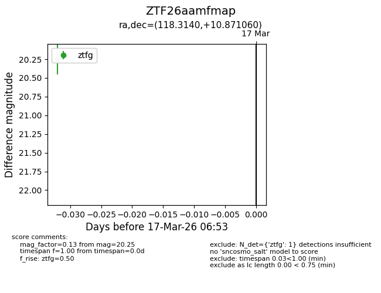
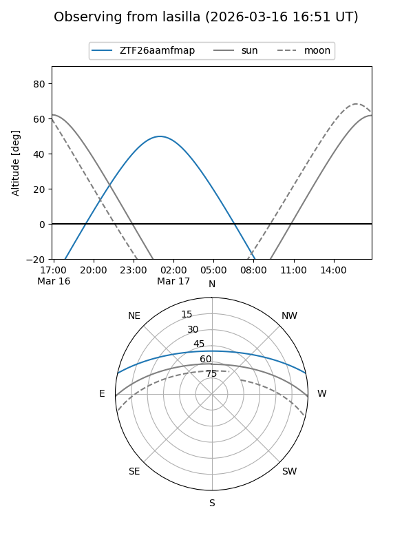
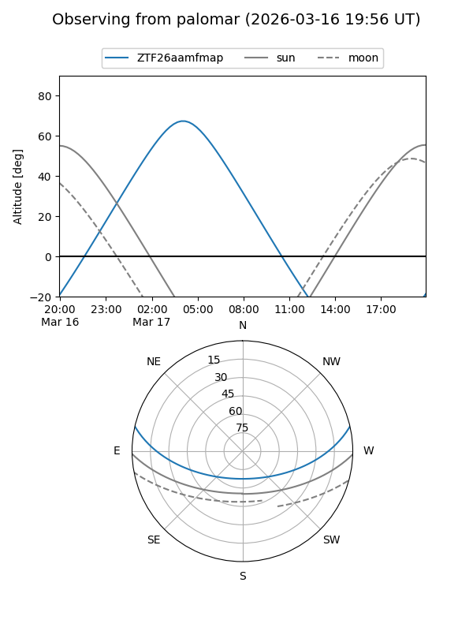

ZTF26aamfmap
Target ZTF26aamfmap at 2026-03-17 06:55
Aliases and brokers:
FINK: link
Lasair: link
ALeRCE: link
alt names
ZTF26aamfmap (ztf,fink_ztf)
Coordinates:
equatorial (ra, dec) = 118.3140,+10.87106
equatorial (HMS+DMS) = 07:53:15.35,+10:52:15.82
galactic (l, b) = (209.9972,+18.59641)
Flags:
Photometry:
last ztfg=20.25
1 ztfg detections
Lightcurve

Visibility


Additional plots